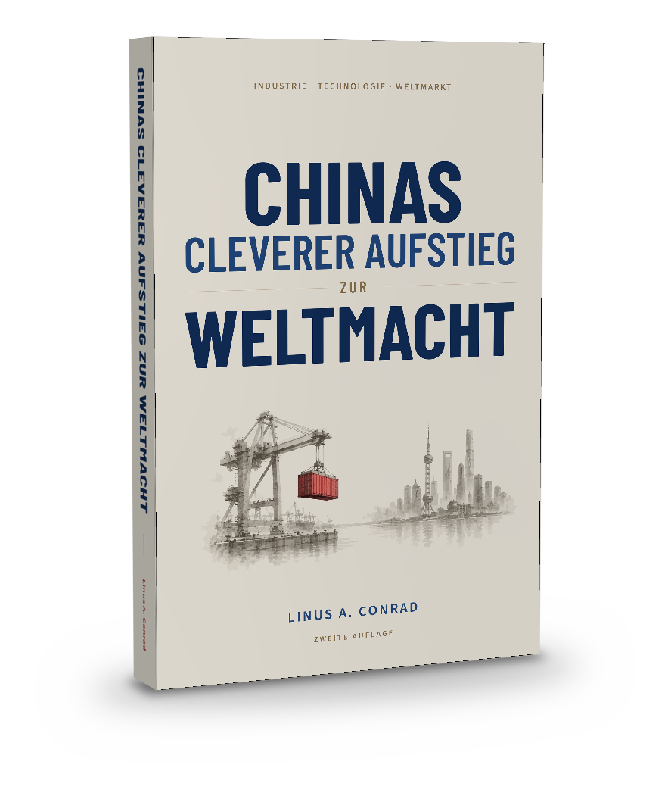
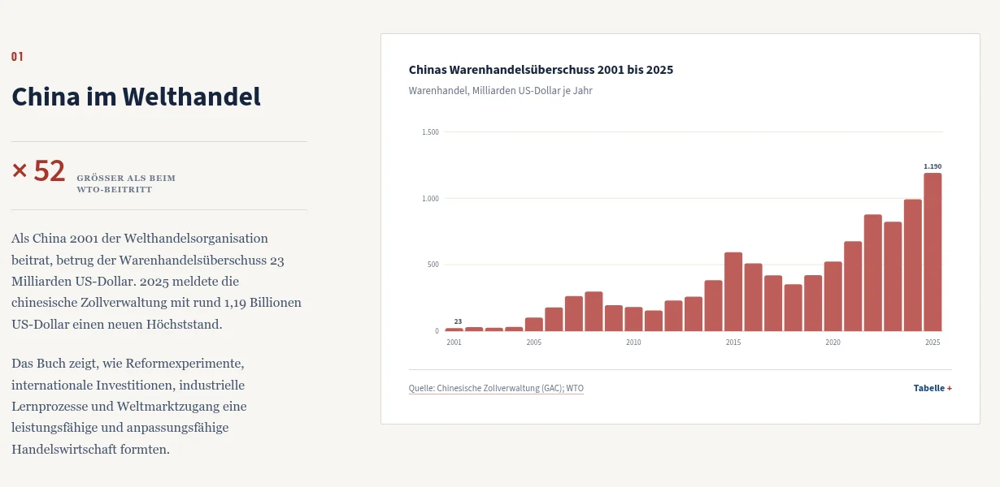
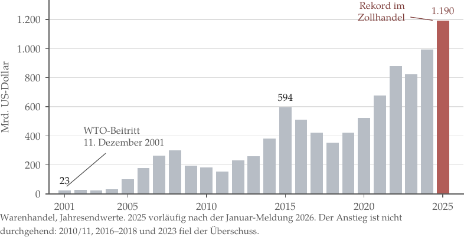
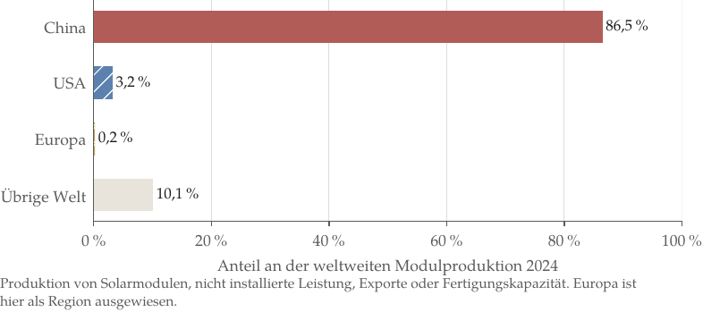

E-BookKindle
Reflowbar, mit klickbaren Querverweisen und Quellenadressen. Vollfarbig auf dem Bildschirm.

Industrie · Technologie · Weltmarkt
Wie aus Reform, Lernen und Weltmarkt industrielle Dichte wurde
Dieses Buch zeigt, wie China Reformen, langfristige Koordination, Unternehmertum und Weltmarktzugang zu außergewöhnlicher industrieller und technologischer Stärke verbunden hat — Branche für Branche belegt und mit demselben Datenmaßstab wie jedes Vergleichsland gemessen.
Ausgaben
E-Book, Taschenbuch und Hardcover enthalten dieselbe vollständige Darstellung — Kapitel, Grafiken, methodischen Anhang und Register. Der Unterschied ist allein das Format. QR-Code scannen oder dem Link zur Ausgabe auf Amazon.de folgen.
Reflowbar, mit klickbaren Querverweisen und Quellenadressen. Vollfarbig auf dem Bildschirm.
Auf weißem Papier; jede Grafik ist eigens für Schwarz-Weiß ausgearbeitet und bleibt ohne Farbe eindeutig.
Die gebundene Farbausgabe mit der vollständigen semantischen Grafikpalette.
Die Links führen zur jeweiligen Ausgabe auf Amazon.de; alle drei Ausgaben sind auch über die internationalen Marktplätze erhältlich.
Die zentrale These
Chinas industrielle Stärke wuchs aus langfristiger Orientierung, mutigen Reformen und der Fähigkeit, Erfahrungen schnell in neue Kompetenzen zu übersetzen. Sechs Kräfte griffen ineinander und verstärkten sich über Jahrzehnte.
Sonderwirtschaftszonen, lokale Pilotprojekte und eine schrittweise Öffnung machten Fortschritt messbar. Erfolgreiche Ansätze wurden weiterentwickelt und auf neue Regionen übertragen.
Fünfjahrespläne, Infrastruktur, Kredit und Beschaffung schufen verlässliche Entwicklungspfade für strategische Sektoren.
Preiswettbewerb, Prozessinnovation und schnelle Skalierung prägten Solar, Batterien, Plattformen und dichte Zulieferketten.
Investitionen brachten Kapital, Qualitätsstandards, Managementwissen und Marktzugang. Chinesische Zulieferer lernten in globalen Produktionsnetzen.
Übernahmen, Lizenzen und Joint Ventures öffneten Türen. Ausbildung, Fertigungsroutine und Forschung machten daraus eigenständige Fähigkeiten.
Exportnachfrage, globale Lieferketten und der WTO-Beitritt schufen Volumen; ein großer Binnenmarkt stärkte Spezialisierung und Skalierung zugleich.
Reform, Lernen, Entwicklung
Die Zeitachse zeigt, wie China wirtschaftliche Möglichkeiten erweiterte und seine Einbindung in die Weltwirtschaft vertiefte.
Lokale Versuche, schrittweise Preisreformen und spätere Sonderwirtschaftszonen öffnen Räume, in denen neue Regeln getestet werden. Reformfähigkeit wird zu einem dauerhaften Vorteil.
Ausländisches Kapital, globale Nachfrage und chinesisches Lernen greifen ineinander. Zulieferer wachsen in Produktionsnetze hinein, statt nur billige Arbeit zu verkaufen. Weltmarktzugang verwandelt Fertigung in dichte Lieferketten.
Das Programm Made in China 2025 formuliert Ziele für zehn Schlüsselindustrien. Wettbewerb, Forschung und Skalierung stärken unter anderem Batterien, Robotik und digitale Technologien. Langfristige Orientierung trifft auf unternehmerische Skalierung.
Der Warenhandelsüberschuss erreicht nach Angaben der Zollverwaltung rund 1,19 Billionen US-Dollar. Unternehmen erschließen neue Absatzmärkte und passen Lieferwege an. Industrielle Dichte unterstützt globale Reichweite.
Demografie, Immobilienwirtschaft und lokale Finanzen verändern die Aufgaben. Auf schnellen Aufbau folgen Produktivität, Innovation und nachhaltige Anpassung. Auf Skalierung folgt eine neue Phase der Lernfähigkeit.
Im Buch
29 Kapitel verbinden Reformen, Industrien und technologische Fähigkeiten zu einem Gesamtbild von Chinas Rolle in der Weltwirtschaft.
Der Prüfmaßstab
Das Buch nimmt Chinas wirtschaftliche und technische Fähigkeiten ernst und legt an alle Vergleichsländer denselben Datenmaßstab an. Jede Zahl lässt sich bis zu ihrer Quelle zurückverfolgen.
Förderung, Raffination, Bauteile und Endprodukte sind verschiedene Märkte — und werden so behandelt.
Angekündigt, finanziert, gebaut und produziert sind vier verschiedene Zustände.
Einordnungen stehen direkt bei der jeweiligen These und machen die Analyse nachvollziehbar.
61 eigene Grafiken und Karten, reproduzierbare Datengrundlagen und 252 eindeutige Webadressen.
Der Datenbegleiter
Sechs Datensätze zum Anfassen: Werte ablesen, Länder ein- und ausblenden, Skalen wechseln und jede Zahl bis zur Quelle verfolgen — vom Warenhandelsüberschuss über Energie und Solar bis zur Robotik. Kostenlos und ohne Anmeldung.

61 eigene Grafiken und Karten
Jede Grafik wurde aus ihren Datensätzen neu gezeichnet. Dieselben Farben bedeuten im ganzen Buch dasselbe; keine Aussage hängt allein von Farbe ab.

